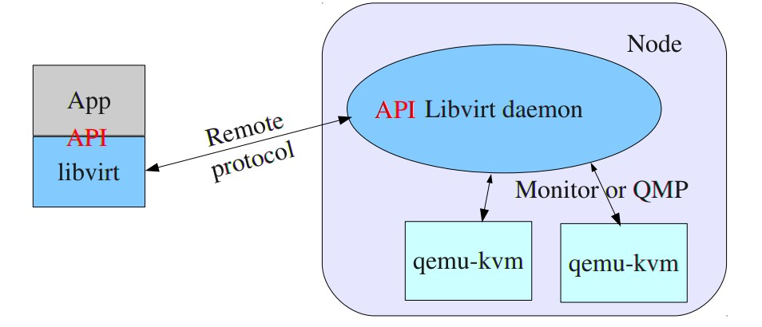
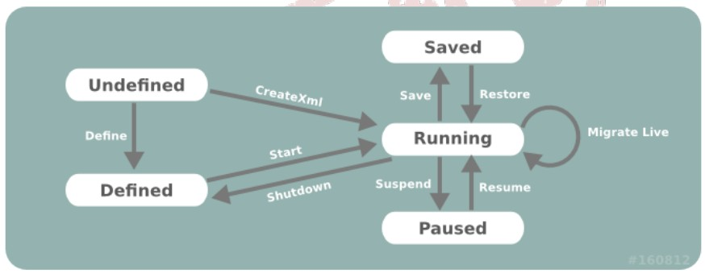

Libvirt API
Amol Kahat
What is Libvert?
- Libvirt is a hypervisor-independent virtualization API and toolkit that is able to interact with the
virtualization capabilities of a range of operating systems.
-
It is free software under the GNU Lesser
General Public License.
- It provides a common, generic and stable layer to securely manage domains on a node.
-
it does not provide high level virtualization policies or multi-
node management features such as load balancing.
Goals of Libvert API
- Virtualization library: manage guest on one node
- Share the application stack between hypervisors
- Long term stability and compatibility of API
- Provide security and remote access
- Expand to management APIs (Node, Storage, Network)
Terms
- Domain : An instance of an operating system running on a virtualized machine provided by the
hypervisor.
-
Hypervisor : A layer of software allowing virtualization of a node in a set of virtual machines,
which may have different configurations to the node itself.
-
Node : A single physical server. Nodes may be any one of many different types, and
are commonly referred to by their primary purpose.
-
Storage Pool : A collection of storage media, such as physical hard drives. A Storage Pool
is sub-divided into smaller containers called Volumes, which may then be
allocated to one or more Domains.
-
Volume : A storage space, allocated from a Storage Pool. A Volume may be assigned
to one or more Domains for use, and are commonly used inside Domains as
virtual hard drives.
Architecture

Connections
-
Open / Close Connection
- conn = libvirt.open(name)
- conn = libvirt.openAuth(uri, auth, flags)
- conn = libvirt.openReadOnly(name)
- conn.close()
-
URI Formats
- Local URI
Syntax :
- dirver://system
- dirver://session
-
Remote URI
- driver[+transport]://[username@][hostname][:port][/path][?exactPrarams]
-
Capability Information
-
caps = conn.getCapabilities()
-
Host Information
- getHostname()
- getMaxVcpus()
- getInfo()
- getCellsFreeMemory()
- getVersion()
- getLibVersion()
Guest Domains
- Domains
- Lifecycle Control

Domain Configuration
- Domains are defined in libvert using XML.
- Everything related only to the domain, such as memory
and CPU, is defined in the domain XML.
-
- Boot Modes
- Memory / CPU Resources
<domain>
...
<vcpu placement='static' cpuset="1-4,^3,6" current="1">2</vcpu>
...
<maxMemory slots='16' unit='KiB'>1524288</maxMemory>
<memory unit='KiB'>524288</memory>
<currentMemory unit='KiB'>524288</currentMemory>
...
</domain>
Virtual Networks
-
A virtual network provides a method for connecting the network devices of one or more guest domains
within a single host. The virtual network can either:
- Remain isolated to the host; or
- Allow routing of traffic off-node via the active network interfaces of the host OS. This includes the
option to apply NAT to IPv4 traffic.
- A virtual network may be transient or persistent.
- Examples:
- conn.networkLookupByName()
- conn.networkLookupByUUID()
- conn.networkLookupByUUIDString()
Any Questions?
Thank You